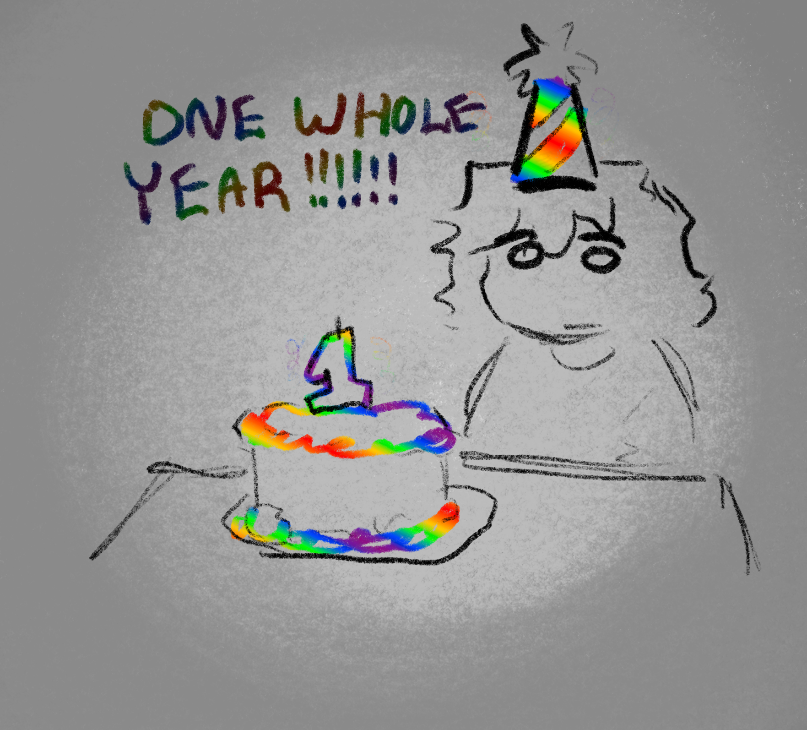

go back home
12/17/2024- added fnaf shrine, minor CSS optimizations.. blinkees.. etc.
12/16/2024- added a lil sandbox place for me to figure out CSS stuff and mess around. HEY SO GREAT NEWS THATS NOT A SANDBOX ANYMORE. CSS heavily changed, made most colors VARIABLES (convinience update!! just update the color variables in :root of the html page n ur good 2 go) Index looks way better now ALSO THIS MARKS ONE YEAR OF THE SITE BEING UP YAYYYY 
12/15/2024- removed tinkerbell effect (rip) and reworked homepage/index further re-adding sidebar (on the left this time) and added tikiisland font (animal jam font!!!)
aswell as added background and 'prettified' changelog (your welcome changelog i love you changelog.) added journal button ( make journal html later pls ) applied 2 a webring or two and added sillies to sidebar.
12/14/2024- i SAID, look at my shrine BITCH(look at the links!! theyre green + the borders and bg work better now)
also shifted the trinkets (blinkees, buttons, etc) from the sidebar to the homepage main body.
12/13/2024- look at my shrine bitch
12/13/2024- BIG news i am NOT failing my classes this semester. added some loved sites in sidebar, added animal jam shrine page (empty as hell btw)
12/7/2024- returned, made tinkerbell work across whole screen (excluding iframe? dunno.) improved sidebar
12/18/2023- added changelog.html, added bck-crackle background, added nyan cat cursor + tinkerbell mouse effect, added random mice, added sidebar, iframe'd main page
old site DEMOLISHED, moved from lizard985.neocities.org to thejesusof.neocities.org
5/25/2023- ADDED WINAMP/WEBAMP!!!!! added music for it. not much else :P. This weeks media was "Super Mario Ball JPN Commercial" https://youtu.be/1rFig-Sntbc
5/17/2023- Changed body to side margins 25%, added "media of the week" to sidebar, neglected shrines (but will do soon!!) Removed the H1 "Hey Guys!" on top of the body text portion. This week's media was https://youtu.be/2kVos9KsURc
3/8/2023- Did slight work on all pages (i don't know what to document oops)
2/27/2023- Hey all! Been focusing More on school lately. Removed Tinkerbell Effect.
2/16/2023- ripping out a bunch of stuff behind the scenes to change the site layout.. making it more old-web-y, i guess? (removal of iFrame, addition of Shrines+PortalShrine with no actual work on it.)
2/12/2023- Working on the weirdcore webring and added the buttons i made to my site. Removed marquee function to "last changed" on homepage.
2/8/2023- Worked on this website instead of homework! Fixed buttonbox/sidebar combination, now the layout is in non-overlapping harmony. Added more speech to homepage about me and the site and whatnot.
2/7/2023- Oops! All changelog dates were incorrect, changed from 2022 to 2023. Edited layout again, made "art" link to toyhou.se page. fucked up file paths, and buttonbox/sidebar layout to combine later (i'm workin on it!)
1/27/2023- Made a site button, tinkered with sidebar + relocated site buttons, brought tinkerbell mouse effect back to the site
1/26/2023- changes and focusing on getting plushies page updated!
1/25/2023- i removed the tinkerbell mouse effect, added sidebar trinkets and added THIS changelog!! super cool huh??
1/24/2023 - added a background for once!